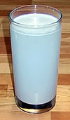

suspended
attribute

Source: Wikipedia
Wikipedia Page (Something wrong with this association? Let us know.)
Wikidata Page (Something wrong with this association? Let us know.)
Occurs in:
- atmosphere_air_sediment~suspended_flowing__mass_concentration
- atmosphere_air_sediment~suspended_flowing__volume_concentration
- atmosphere_air_snow~suspended_flowing__mass_concentration
- atmosphere_air_snow~suspended_flowing__volume_concentration
- drainage-basin_outlet_water_sediment~suspended_flowing__mass_rate
- drainage-basin_outlet_water_sediment~suspended_flowing__volume_rate
- channel_exit_water_sediment~suspended_flowing_x-section__mass_rate
- channel_water_sediment~suspended__mass_concentration
- channel_water_sediment~suspended_flowing__mass_rate
- channel_water_sediment~suspended__rouse_number
- channel_water_sediment~suspended_flowing__volume_rate
- channel_water_sediment~suspended_flowing__volume-flow-rate-law_area_exponent
- river-delta_channel~main_entrance_water_sediment~suspended__mass_concentration
- river-delta_channel~main_entrance_water_sediment~suspended_flowing__mass_rate
- river-delta_channel~main_entrance_water_sediment~suspended_transport__mass_rate
- river-delta_channel~main_entrance_water_sediment~suspended__volume_concentration
- sea_water_sediment~suspended__mass_concentration
- sea_water_sediment~suspended__volume_concentration